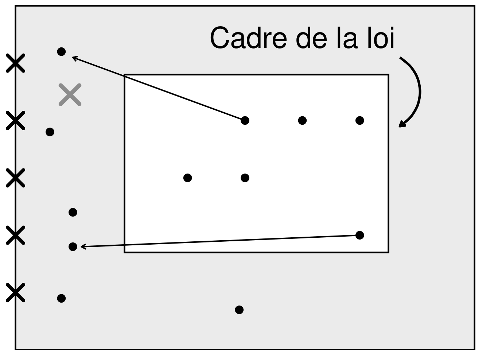

Préambule (Benjamin Thiry)
Cher(e)s collègues.
Bienvenue à cette nouvelle rencontre du groupe “pratiques cliniques avec les justiciables” de la Ligue Bruxelloise pour la Santé Mentale. Aujourd’hui, nous abordons la question de la peine par un autre versant qu’à l’accoutumée : celui du point de vue des victimes.
Dans la conception pénale classique, l’infraction n’est pas d’abord pensée comme un tort causé à une personne singulière, mais comme une atteinte portée au corps social, entendu comme une entité symbolique supérieure. Dans cette perspective, la peine a notamment pour fonction de réaffirmer la norme commune et de restaurer l’adhésion du condamné au pacte social. Le ministère public, et en particulier le Procureur du Roi dans notre système belge, apparaît ainsi comme le représentant de la sécurité générale et le défenseur de l’intégrité du corps social.
Pendant longtemps, dans ce cadre, la victime est restée relativement en marge du débat pénal. Le procès se structurait avant tout autour de l’auteur, de l’infraction et de la réponse de l’État. La souffrance, les attentes et l’expérience psychique de la victime n’occupaient qu’une place secondaire dans l’élaboration des réponses judiciaires et cliniques. L’histoire de la victimologie rappelle d’ailleurs que cette relative invisibilisation des victimes a longtemps été constitutive de la justice pénale moderne.
À partir des années 1970 et 1980, cette configuration commence toutefois à se transformer (Fattah, 2002; Mastrocinque, 2010). Les victimes acquièrent progressivement une place nouvelle, tant dans les procédures pénales que dans les pratiques d’accompagnement. Plusieurs facteurs concourent à cette évolution : la montée des mouvements féministes, qui rendent davantage visibles les violences sexuelles et intrafamiliales ; une reconnaissance croissante des effets psychotraumatiques de la violence ; le développement de la victimologie comme champ de recherche et d’intervention ; ainsi que la médiatisation d’affaires criminelles majeures, qui contribuent à déplacer l’attention publique et institutionnelle vers l’expérience des victimes.
Aujourd’hui encore, ce chantier demeure relativement récent et largement en travail. Les droits des victimes se sont nettement renforcés au niveau européen, notamment avec la directive 2012/29/UE, qui consacre des standards minimaux en matière d’information, de soutien, de protection et de participation (European Parliament and Council of the European Union, 2012). Mais entre la reconnaissance formelle des droits et leur traduction concrète dans les pratiques cliniques, judiciaires et institutionnelles, il subsiste de nombreuses tensions.
Ce thème a, il faut bien le reconnaître, été peu travaillé dans notre groupe au fil des années, comme si l’attention portée aux auteurs et celle portée aux victimes devaient nécessairement s’opposer. Or c’est précisément cette opposition trop simple qu’il importe aujourd’hui d’interroger. Penser la clinique avec les justiciables n’exige pas d’effacer la place des victimes ; cela invite au contraire à mieux comprendre comment les différentes scènes — psychique, sociale, judiciaire et relationnelle — se nouent autour de l’acte, de ses effets et de ses inscriptions subjectives.
C’est donc avec un réel plaisir que nous ouvrons cette séance consacrée à cette question.
Nous avons le plaisir d’accueillir Anne-Françoise Dahin, psychologue au Service Laïc d’Aide aux Justiciables et aux Victimes, ainsi que Lisiane Pittemans et Denis Gosselet, de la Maison de Justice de Bruxelles.
Discussion suite au visionnage d’un témoignage d’une victime à visage caché
Au sein de l’interview visionnée, la victime évoque l’importance des séquelles psychologiques laissées, ainsi que celle de la peur. Cette peur (constituant également une réponse adaptative à la situation) est définie comme l’anticipation du retour de la dangerosité ; la peur que l’agresseur revienne encore. Cette peur peut paralyser les victimes dans leurs démarches tant judiciaires que personnelles sur la voie de la guérison. La peur entraîne quatre grandes réactions de survie : attaquer, dissocier, se soumettre, rester tétanisé. Rester tétanisé par la peur empêche les victimes de parler, surtout lorsque le sentiment de honte qu’elles peuvent éprouver après coup empire leur situation. En effet, la haine et l’acharnement auxquelles les victimes font généralement face sont encore bien plus répandues qu’il n’y paraît ; la victime qui ose témoigner n’est pas toujours crue, elle est parfois blâmée, rendue fautive, etc. ; renforçant le sentiment de honte que peuvent ressentir les victimes. Toutes ces réactions provoquent non seulement une peur et une honte de parler chez les victimes, mais également un sentiment de solitude et d’illégitimité atroce quant à leur propre vécu traumatique. Elles se retrouvent seules avec ce qu’elles ont vécu, sans oser en parler, sans parfois même savoir à qui en parler. Et pourtant, la victime cite clairement l’importance du soutien, du Service d’Assistance Policière aux Victimes (S.A.P.V.) et des groupes de paroles (des services d’aide aux victimes) dans son histoire. Ceux-ci lui ont permis de recevoir de l’aide dans les longues procédures d’administration judiciaire, de ne pas se retrouver toute seule, d’avoir quelqu’un sur qui compter, et de voir le bout du tunnel. Être entendu, être cru, être vu, et être soutenu, c’est ce dont les victimes ont le plus besoin. Dans les procédures judiciaires et pénales, se pose également la question de la présence des victimes au procès, parfois trop dur pour elles à supporter. La victime de la vidéo, par exemple, relate sa présence au procès comme une étape compliquée mais importante, où elle a enfin eu le droit à la parole. Ce droit à la parole, c’est aussi le droit d’être enfin écouté et reconnu, c’est un moyen pour les victimes de se libérer d’une partie du poids qu’elles sont souvent seules à porter. Les victimes parlent pour elles mais aussi pour autrui ; pour que leur agresseur ne recommence pas et qu’il ne blesse pas quelqu’un d’autre, pour garder une trace marquée de ce que l’agresseur a fait, pour qu’on n’oublie pas ce qui leur est arrivé. En ce sens, introduire la victime est donc synonyme d’introduire l’émotion.
Les victimes d’un point de vue théorique
Après ce témoignage et les discussions, le service d’aide aux victimes et le service d’accueil des victimes au Parquet ont repris la parole afin de redonner un contexte théorique à la victime, et conceptualiser certains aspects importants de la position de victime. Le mot “victime” constitue un signifiant condensé, ayant beaucoup de significations. D’une part, le sentiment d’être victime est partagé par tout le monde ; on s’est tous déjà sentis victime/lésé de quelque chose. Pourtant, on donne tous un sens différent à ce mot car l’état de victime constitue une expérience propre et individuelle qui n’est pas toujours partagée. D’un point de vue plus objectif et théorique, le mot “victime” est souvent décrite via trois occurrences pouvant être mêlées et/ou dissociées :
- Premièrement, l’état de victime se rapporte aux séquelles plus ou moins visibles et admises qu’elle a subies lors de l’incident. Cet état se caractérise principalement par le sentiment d’être mis dans la place de la victime, le ressenti d’impuissance sans recours possible, du fait des effets des transgressions de la loi subies. Mais également le sentiment de s’être retrouvé en position d’objet de l’autre, face au désire de détruire de l’autre.
- Ensuite, le statut de victime fait état de la reconnaissance symbolique de sa position de personne ayant été abusée/blessée par une instance légitime qui a autorité (exemple : Justice, services d’aide aux victimes). Il est donc question ici de la reconnaissance objective légale vis-à-vis d’une autorité judiciaire (souvent, le tribunal).
- Et enfin, la position subjective de victimisation, se rapportant à la revendication personnelle d’avoir été victime, une position humaine de plainte. La victime s’auto-qualifie comme telle de manière subjective et générale, en position de plaignant contre les autres (presque quérulent).
Ce cadre théorique est important à comprendre car il met en lumière les difficultés que les victimes peuvent éprouver à accepter leur position. Pour guérir du traumatisme, il faut accepter d’avoir été en position de victime. En effet, une victime peut par exemple refuser sa position subjective de victime malgré la reconnaissance de statut de victime objective par les instances judiciaires, faisant alors preuve d’un déni de son propre état de victime.
Cette théorie met également en lumière l’importance de la reconnaissance de leur statut de victime par les organismes représentant la loi, l’objectivisation de la victime, sans quoi elles peuvent éprouver un manque d’acceptation, de reconnaissance, et de légitimé face à leur propre vécu traumatique.
La place des victimes et des criminels dans le cadre de la loi
Les services d’aide aux victimes ont ensuite conceptualisé le cadre de la loi, un aspect théorique d’une importance capitale, pourtant parfois très flou dans la connaissance publique.
On peut donc le modéliser par un schéma tel que repris dans la Figure 1, où le premier cadre (plus petit) représente le cadre de la loi tel que communément imaginé, contenant la population représentée par des points. A l’extérieur de ce cadre, dans la zone grisée, se trouvent les hors-la-loi, personnes éjectées du cadre comme les flèches le démontrent. Mais également, on retrouve dans cette zone grisée la Justice (Tribunaux, Cours, etc.) représentée par la croix grise. Contenant cette zone grise, un autre cadre plus grand représente le réel cadre de la loi, celui dont nous n’avons généralement pas conscience, englobant également les hors-la-loi. Au bord de ce plus grand cadre se trouvent enfin les services d’accompagnement des victimes (et témoins) et auteurs d’infractions, représentés par des croix noires, dont le but est d’aides les hors-la-loi à reconstruire leur cadre de la loi. Toutes ces notions seront développées ci-dessous.
Le cadre de la loi peut être conceptualisé comme un cadre au sens littéral. Ce cadre, nous en avons une vision claire et réduite ; il est délimité par les règles sociétales (et parfois culturelles), ainsi que par des lois opérantes fortes qui sont parfois non-inscrites. Quiconque enfreint ces règles se retrouvera éjecté du cadre de la loi : hors-la-loi, littéralement. Ce cadre donne une confiance absolue en la Justice et la sécurité de la société ; on n’en a réellement conscience que lorsqu’il est enfreint. Mais alors qu’y a-t-il hors de ce cadre ? Le néant, en quelque sorte, puisque les victimes ont été anéanties par ce qu’elles ont subi. Suite à cette transgression du cadre, on bascule de l’insouciance à un état de conscience jamais envisagé, confronté au Réel qui est hors représentation et symbolisation, hors langage, dans le néant.
Hors de ce cadre de la loi, se trouvent donc les auteurs d’infractions ayant enfreint les règles, mais également les victimes et les témoins de ces infractions. En effet, ceux-ci se sont fait entraîner hors du cadre de la loi par le criminel, leur cadre ayant été brisé par celui-ci. Ce cadre jusqu’à lors bien gardé et régi par les lois, se base sur un principe mental inconscient : ce qui est interdit par les lois n’existe pas. En observant ou subissant un acte contraire à la loi, cette vision vole en éclat et brise le cadre. Ces victimes et témoins se retrouvent donc hors-la-loi, se sentant incompris des autres restés dans le cadre, comme étrangers aux autres et à eux-mêmes. Cette éjection du cadre entraîne inévitablement la chute de l’identification des victimes, qui déstructure et perturbe le psychisme de par l’idée de ne plus pouvoir se reconnaître dans les humains. Cette chute de l’identification entraîne donc elle-même une chute de l’imaginaire. D’où l’importance des groupes de parole avec d’autres personnes ayant également été expulsé du cadre : eux peuvent comprendre, ils redémarrent l’imaginaire, et le groupe devient alors un besoin presque vital. La première structuration erronée de notre psychisme (un besoin psychique, partiellement culturel) dans l’idée commune et biaisée du cadre de la loi est de croire que les instances judiciaires se trouveraient dans ce cadre. Or, toute société doit anticiper la transgression des règles afin de maintenir la sécurité, et donc mettre en place un moyen de contenir ces transgressions inévitables. En réalité, les instances judiciaires ne font pas partie du cadre, mais siègent à l’extérieur de celui-ci afin de le maintenir. Dès lors, leur but premier n’est pas de ramener les hors-la-loi dans le cadre de la loi (bien qu’ils y participent dans une certaine mesure de par les procès par exemple), mais bien de les juger pour avoir brisé le cadre. Alors qui tente de ramener les hors-la-loi dans le cadre ?
La seconde structuration erronée de notre psychisme dans cette idée commune et biaisée de cadre de la loi est de réduire notre vision à un seul cadre. Cette structuration erronée de notre psychisme constitue un besoin psychique nécessaire afin de se sentir en sécurité dans notre société. Il existe en réalité un cadre plus grand englobant le cadre de la loi et les instances judiciaires, ainsi que les hors-la-loi. À l’extrémité de ce plus grand cadre se trouvent les intervenants d’aide aux victimes (et témoins) et aux criminels, qui sont là pour rappeler à ceux-ci que ce n’est pas réellement le néant qui se trouve hors du cadre de la loi, et leur faire prendre conscience de l’existence de ce cadre plus grand. Leur réel but est d’instaurer cette vision à deux cadres pour les victimes et témoins pour les retirer du néant, afin que même si elles savent que le danger est toujours potentiellement là, elles aient pris conscience de la sécurité de ce deuxième cadre assuré par la Justice protectrice et non plus juste répressive. Ces intervenants aident les hors-la-loi à petit à petit récréer leur cadre de la loi ; ils ne les ramènent pas dans le cadre initial mais en reforment un nouveau, qui comprendra le changement de la vision qu’a la personne du cadre d’origine. Le procès participe également à ce processus de recréation du cadre.
La vision personnelle du cadre de la loi est donc différente pour chacun, notamment car elle comprend le côté individuel avec lequel on a été introduit dans la Loi et la manière individuelle dont on a créé ce carré, en plus de la vision commune que la société nous en donne. Cette vision du cadre de la loi est formée par notre vécu, nos croyances et notre rapport à la loi, souvent inscrit dans un rapport duel comme évoqué un peu plus tôt (dans la théorie sur les victimes). À la suite de ce rapport duel, la colère de la victime pour l’auteur peut parfois disparaître complètement, ou se retourner vers l’Etat ; “S’il y a transgression, c’est de la faute de l’État”. Cette vision des choses renvoie à la façon de penser évoquée précédemment selon laquelle ce qui est interdit par les lois n’existerait pas. Or, comme indiqué plus tôt, une interdiction entraînera toujours une transgression. La majorité des tout-venants ne pouvant pas s’imaginer la transgression des règles de loi, c’est finalement la vision même de la Justice, de l’État, et du cadre de la loi qui est changé lors d’une transgression (pour les victimes, les témoins, mais également les auteurs). En réponse à cette perte de repère et cette transgression jusqu’à lors inimaginable, le sens de la peine prend un sens plus fondamental de Justice pour les victimes.
Le Service d’Accueil aux Victimes des Maisons de Justice de Bruxelles
Après ce point théorique et conceptuel, la parole a été donnée au Service d’Accueil aux victimes des Maisons de Justice de Bruxelles afin que ceux-ci puissent expliquer leur rôle dans la prise en charge des victimes.
Il est peut-être avisé de faire un rappel des différents organismes d’aide avant de se concentrer sur le service d’accueil aux victimes. Premièrement, il y a le Service d’Aide Policière aux Victimes (SAPV), un service de première ligne de la police qui fait partie du ministère intérieur, parfois communal. Ce service ne propose pas de suivi/prise en charge psycho-social car il se trouve dans un cadre policer. Les SAPV ont quatre missions principales :
- l’accueil ;
- l’information ;
- l’aide pratique immédiate et
- l’orientation (vers les services d’aide notamment).
Les missions sont assurées par les policiers tout-venants, mais le SAPV joue un rôle supplémentaire qui est la formation des policiers à l’assistance aux victimes. Les SAPV travaillent avec les services d’accueil des victimes si besoin (travail en réseau).
Ensuite, il y a le service d’accueil aux victimes qui travaille avec la Justice, une fois que le dossier est arrivé au Parquet. C’est un service agréé par la communauté française (maisons de Justice), qui ne propose donc pas de suivi/prise en charge psycho-social car ils travaillent dans un cadre de Justice. Ce service joue un rôle d’accueil aux victimes pour qu’elles puissent poser leurs questions, consulter leur dossier si le magistrat a donné son aval, aller voir le magistrat ou le procureur. Le service a aussi pour mission de communiquer des informations, préparer et accompagner les victimes pour le procès, et demandent également si les victimes veulent être tenus de la libération lors de TAP. Ce service se place donc dans une démarche plus administrative d’accompagnement, en lien avec un magistrat de liaison. Ils forment de futurs magistrats, informent et sensibilisent, mais ne sont pas tenu de rendre des rapports à la justice.
Et enfin, le Service d’Aide aux Victimes, un service agréé par la communauté française (maisons de Justice) pour assurer un accompagnement et un suivi psychologique et social des victimes. Ils n’ont donc pas accès aux dossiers pénaux. Ils peuvent par exemple accompagner au procès, mais ne peuvent pas assister lors des déclarations car c’est le rôle des assistants de Justice. Maintenant que la distinction est faite, les SAPV et Services d’Aide aux Victimes étant assez connus et répandus, il serait intéressant de se pencher plus en profondeur sur le service d’accueil aux victimes.
Leur but principal est de faire le lien entre les victimes et la procédure via des explications administratives, des réorientations, des réponses aux questions, etc., mais aussi de guider la victime, l’informer, jouer le rôle d’interface entre celle-ci et la Justice, et expliquer le temps que prennent les procédures. Ils agissent donc principalement au niveau pénal, dans l’accompagnement (et non le suivi psycho-social).
Concrètement, ils agissent lors de saisies systématiques (en cas d’urgence), à l’appréciation du magistrat (avec accord de la victime), ou sur demande des victimes elles-mêmes, de leurs proches, ou de services extérieurs. Ils accompagnent la victime lors du dernier hommage (les SAPV également) lors d’un décès, lors de reconstitutions, et au tribunal avec le SAPV si ce dernier ne s’en occupe pas déjà. Ils ont certaines missions en commun avec le SAPV mais celui-ci va plus souvent à l’assistance lors des auditions, remises de possessions / pièces à conviction, etc. Pour faire simple, les SAPV sont plus actif dans les suites policières alors que le service d’accueil du Parquet est plus actif dans les suites judiciaires. Un de leurs rôles les plus importants intervient dans des dossiers de violence envers les femmes, ceux-ci étant souvent classés. Ils interviennent pour expliquer qu’en l’absence de preuves suffisantes, leur témoignage peut parfois se résumer à une parole contre une autre. Mais ils rappellent également qu’un dossier classé sans-suite peut être réouvert si besoin, et n’est donc pas fermé à jamais.
La question de la plainte
Lors de la dernière discussion, un thème important a été abordé ; celui du dépôt de plainte par les victimes. C’est en effet une grosse étape, qui demande énormément de courage aux victimes. Il arrive qu’une victime veuille finalement retirer sa plainte. Cependant, une plainte ne peut pas être retirée en Belgique car la justice pénale se comprend comme un pacte implicite entre 3 instances : la société/Etat, la victime, et l’auteur). Dès lors, la plainte est le résultat du devoir du citoyen de signaler une infraction à l’État, dans ce contrat tacite avec la société. Dès lors, après avoir informé la société de sa plainte, cette dernière est confiée à la société et ne peut donc plus être retirée par la victime, ni enlevée par les policiers (de par leur déontologie). Dans le volet pénal, la justice cherche à régler la relation de l’auteur à la société, c’est pourquoi la victime ne peut pas émettre d’avis sur la peine donnée à l’auteur, ni ne peut faire appel. Le volet civil est donc le seul volet qui lie la victime aux deux autres instances. Alors quels sont les objectifs et les attente des victimes au moment de retirer leur plainte ? Le plus souvent, les victimes qui cherchent à retirer leur plainte le font car elles ne voulaient pas causer de problèmes à leur agresseur mais espéraient plutôt que la crainte de la police et le coup de pression engendré par ce dépôt de plainte ne suffise à calmer la situation. Dans ce cas, la victime se sent parfois coupable de ce qui arrive à son agresseur à la suite de ce dépôt de plainte. On peut parfois y déceler une croyance de toute-puissance de la part de la victime, qui pense pouvoir déposer ou enlever la punition à son souhait, comme un rapport entre 2 personnes ; un rapport duel. Or, si chez les juges de paix, c’est bien dans un rapport entre deux personnes que la justice s’établit, ce n’est pas le cas dans le Pénal où la société intervient également. Dans un registre différent, il est parfois possible pour la victime de déposer plainte même après le délai de prescription des faits, ce qui peut avoir un effet symbolique et permettre à la victime d’enfin être entendue, crue, et reconnue. En effet, nous avons vu plus tôt l’importance de la reconnaissance de l’infraction pénale par la Justice dans l’objectivisation de la victime, une des trois composantes de la position de victime. Ainsi, même des années plus tard, avoir la possibilité d’effectuer cette démarche de dépôt de plainte et d’être entendu en tant que victime devient une démarche symbolique sur la voie de la guérison.
Le mot de la fin
Après cette dernière discussion, un message plus global s’est dégagé concernant la prise en charge des victimes dans la Justice d’aujourd’hui. Il est bon de rappeler que la vérité de la victime n’est pas toujours similaire à la vérité judiciaire, et que cette dernière ne donne pas toujours les réponses attendues aux questions de la personne, et n’apporte pas toujours de reconnaissance non plus. Plus que du Judiciaire, c’est un enjeu profondément humain qui se joue dans une procédure pénale ; il faut réhumaniser avec la justice et la reconstruction du cadre de la loi la personne qui a été déshumanisée avec l’infraction.
Les références
European Parliament and Council of the European Union. (2012). Directive 2012/29/EU of the European Parliament and of the Council of 25 October 2012 Establishing Minimum Standards on the Rights, Support and Protection of Victims of Crime. Consulté à l'adresse https://eur-lex.europa.eu/eli/dir/2012/29/oj/eng#
Fattah, E. A. (2002). Victimology: Past, Present and Future. Criminologie, 33(1), 17‑46. https://doi.org/10.7202/004720ar
Mastrocinque, J. M. (2010). An Overview of the Victims Rights Movement: Historical, Legislative, and Research Developments. Sociology Compass, 4(2), 95‑110. https://doi.org/10.1111/j.1751-9020.2009.00267.x
Citation
BibTeX
@online{thiry2026,
author = {Thiry, Benjamin and Mayer, Hansel},
title = {Pratiques cliniques avec les victimes},
date = {2026-02-10},
url = {https://benjaminthiry.netlify.app/posts/2026-02-10-victimes/},
langid = {fr}
}
Veuillez citer ce travail comme suit :
Thiry, B., & Mayer, H. (2026, February 10). Pratiques cliniques avec
les victimes. Retrieved from https://benjaminthiry.netlify.app/posts/2026-02-10-victimes/